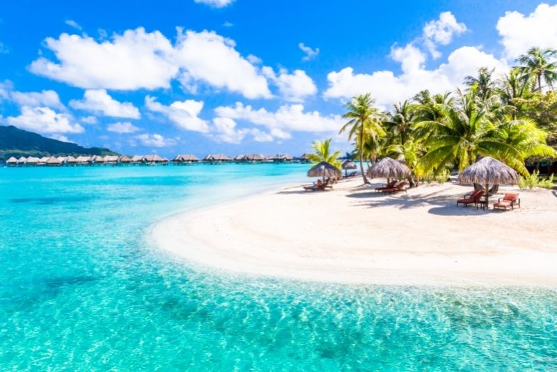
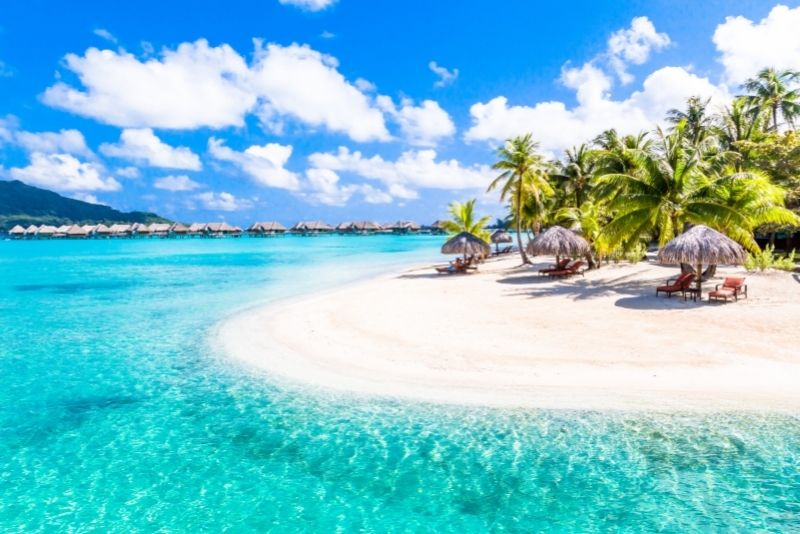

bora bora french polynesia
 

Bora Bora (French: Bora-Bora; Tahitian: Pora Pora) is Associate in Nursing island cluster within the Leeward Islands. The Leeward Islands comprise the western a part of the archipelago of French Polynesia, that is a remote collectivity of the European country within the Pacific. Bora Bora features a total area of thirty.55 km2 (12 sq mi). the most island, situated regarding 230 klick (143 mi) northwest of Papeete, is enclosed by a lagune and a coral reef. within the center of the island ar the remnants of Associate in Nursing extinct volcano, rising to 2 peaks, Mount Pahia and Mount Otemanu; the very best purpose is at 727 m (2,385 ft). Bora Bora is a component of the Commune of Bora-Bora, that additionally includes the coral reef of Tūpai. The languages spoken in Bora Bora ar Tahitian and French. However, thanks to the high touristry population, several natives of Bora Bora have learned to talk English.[2]
Bora Bora could be a major international traveler destination, celebrated for its seashore (and even offshore) luxury resorts. the key settlement, Vaitape, is on the western facet of the most island, opposite the most channel leading into the lagune.